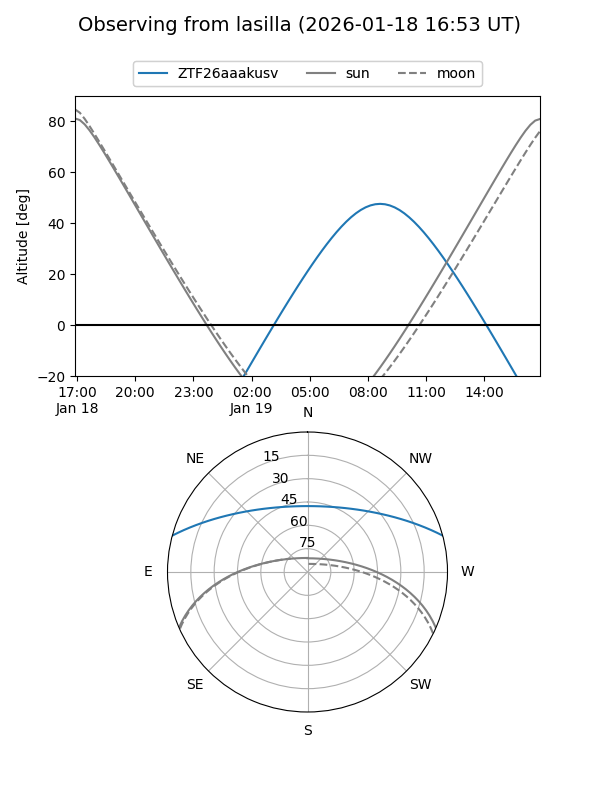

ZTF26aaakusv
Target ZTF26aaakusv at 2026-01-16 12:45
Aliases and brokers:
FINK: link
Lasair: link
ALeRCE: link
alt names
ZTF26aaakusv (ztf,fink_ztf)
Coordinates:
equatorial (ra, dec) = 177.2301,+13.26301
equatorial (HMS+DMS) = 11:48:55.22,+13:15:46.83
galactic (l, b) = (253.3389,+69.85632)
Flags:
Photometry:
last ztfg=19.78
1 ztfg detections
Lightcurve

Visibility


Additional plots